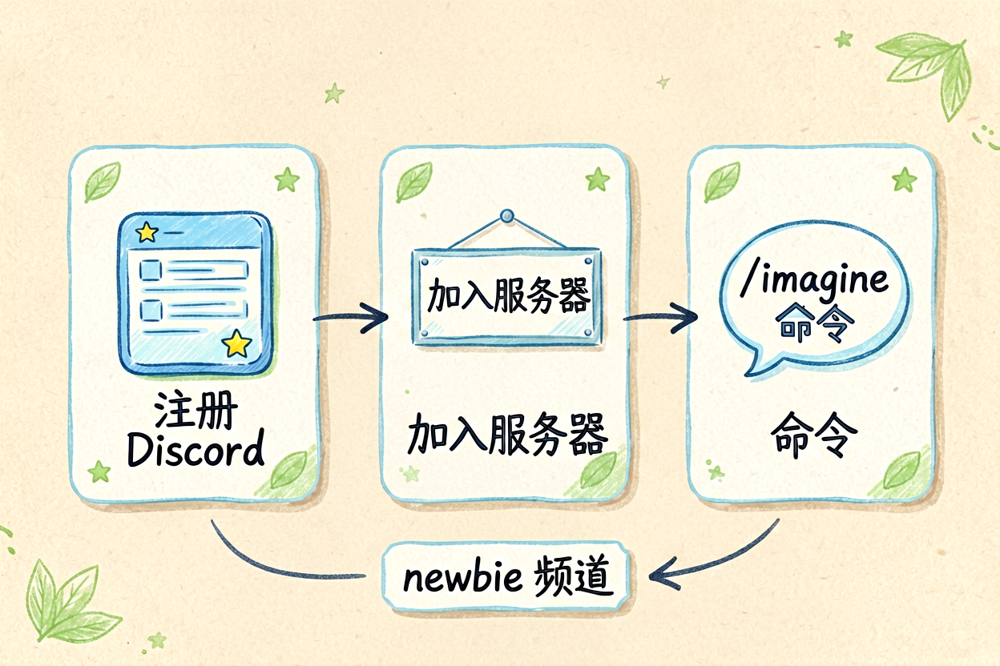
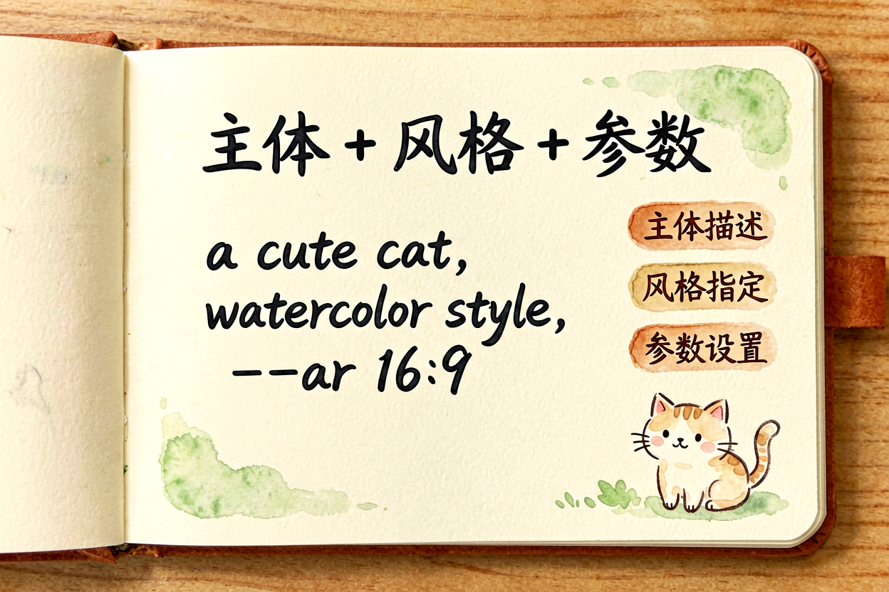
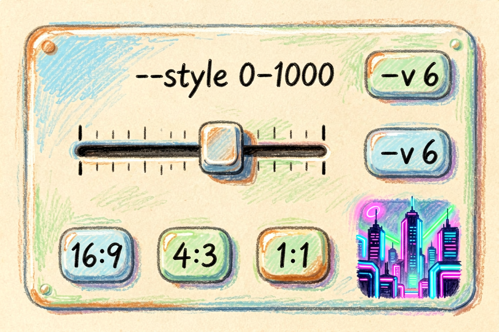
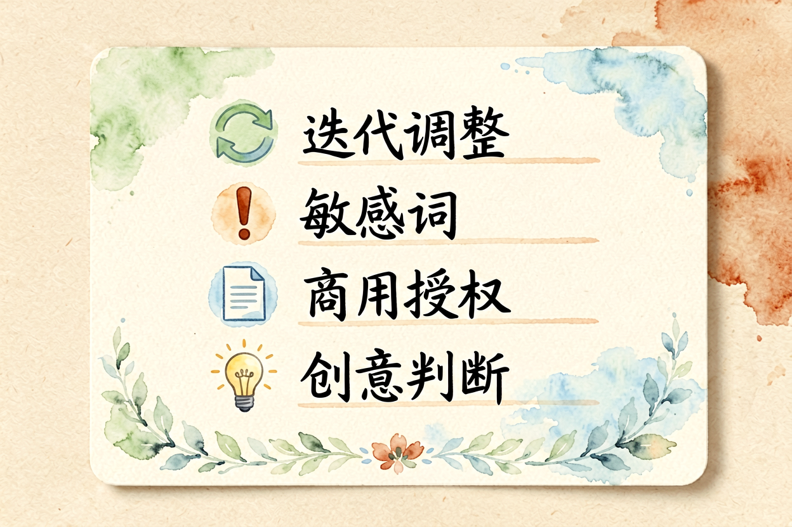
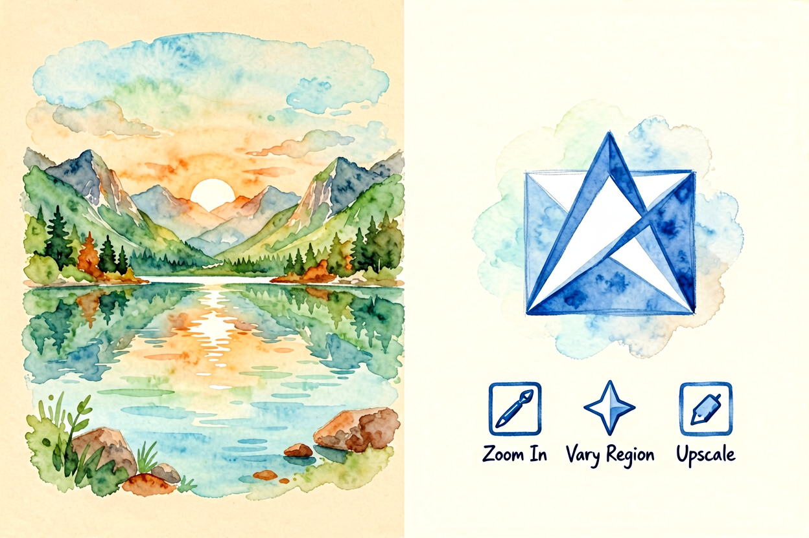
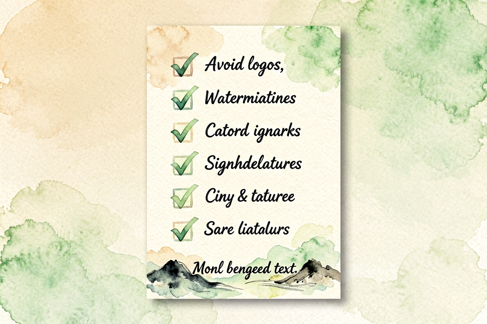

Midjourney 新手教程：从零到能出图的完整入门指南
Midjourney 是目前最知名的 AI 生图工具，但国内访问需要额外配置。本文从零讲清注册、访问、提示词、参数全套流程，新手照着做就能出图。
Midjourney新手教程是本文的核心主题。 !配图1Midjourney界面概览
{kind=link}
Midjourney新手入门：AI 生图的工具王者
Midjourney 是 AI 生图领域的标杆工具，生成质量高、风格多样、可控性强。但它不是网页工具，而是基于 Discord 的机器人，需要额外配置才能在国内使用。付费档每月 10 美元起，免费试用期已结束，新手建议先试用再决定是否订阅。
和Midjourney 提示词技巧里讲的高级用法不同，本文专注新手入门，从注册到出图一步步讲清楚。国内用户需要注意访问方案，这是最大门槛。
Midjourney新手入门：注册 Discord 账号

Midjourney 运行在 Discord 平台上，所以第一步是注册 Discord 账号。打开 discord.com，用邮箱注册，验证后加入 Midjourney 官方服务器。
国内访问 Discord 需要代理，这是最大的门槛。新手建议用稳定的代理服务，确保能正常连接 Discord。注册后先在测试服务器（Test Server）里熟悉操作，确认没问题后再开付费档。
Midjourney新手入门：订阅与开通

Midjourney 订阅分四档：Basic 10 美元/月、Standard 30 美元/月、Mega 60 美元/月、Unlimited 200 美元/月。新手建议从 Basic 起步，每月 100 分钟生成时间，足够日常使用。
订阅前先看Midjourney 是否值得订阅里的详细评测，确认自己的需求频率。如果只是偶尔玩，免费替代方案可能更划算。
Midjourney新手入门：写出高质量的提示词

Midjourney 提示词分三部分：主体描述、风格描述、参数设置。示例：
/caption 一只橘猫趴在窗台晒太阳，午后阳光，电影感，16:9 --ar 16:9 --v 6主体描述越具体越好，风格描述用形容词（电影感、水彩风、写实），参数控制比例和版本。和Midjourney 提示词技巧里讲的高级参数不同，新手先掌握基础结构即可。
Midjourney新手入门：生成与迭代

输入提示词后，Midjourney 生成四张图，你可选 U1-U4 放大某一张，或 V1-V4 variation 生成变体。新手建议先选一张满意的放大，再逐步调整提示词优化。
生成质量受提示词质量影响最大。主体不清、风格混乱、参数错误都会导致废片。遇到不理想的结果，别急着重来，先分析是哪部分出了问题，针对性调整。
Midjourney新手入门：国内访问方案与替代选择

国内访问 Midjourney 需要稳定代理，这是最大门槛。如果代理成本高或体验差，建议考虑Midjourney 免费替代方案里的即梦、可灵等国产工具，功能相似、免费可用、国内直连。
关于 Midjourney 新手教程，核心经验是「先熟悉，再深挖」。别一上来就买订阅，先在测试服务器里跑通流程，确认需求再付费。AI 生图是技巧活，多试多练才能上手。
Midjourney 新手教程的关键是动手试。别看完就忘，当天就生成第一张图，让操作成为习惯。用多了自然熟练。

本文信息核对于 2026-09-07。AI 产品的价格、免费额度与功能变动频繁，实际以各工具官网当前说明为准。